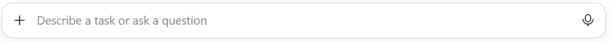
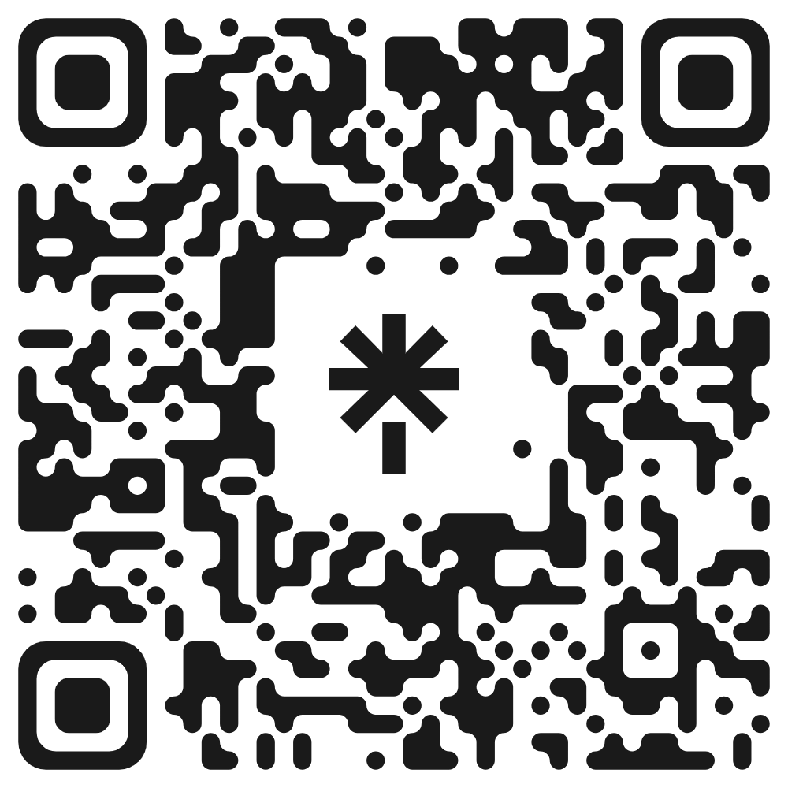

סדנה לסגל האוניברסיטה הפתוחה
קלוד קוד,
מפגש 2
תום הגלעדי · יום שלישי, 10.11.2026
מה נעשה היום
- פתיחה וחזרהסקר קצר, חזרה על מפגש 1, ואבטחת מידע
- בקשה, תוכנית וסקיל2 התנסויותאיך מבקשים, מצב Plan, ומתי סקיל ומתי הוק
- קלוד מחוץ לאפליקציה3 התנסויותמחברים, MCP ו-API, התוסף לכרום, וממשיכים מהטלפון
- שיחות, הקשר וקבצים3 התנסויותשיחות במקביל, פקודות סלאש, חלון ההקשר, וקבצי אופיס
- שאלות וסיוםעוד שני דברים, שאלות, ואיך ממשיכים לבד
מה ניסיתם/ן השבוע?
כתבו בצ'אט:
1
עבדתי עם קלוד קוד על משהו משלי
2
ניסיתי ונתקעתי
3
לא הספקתי
ומי שכתב/ה 1 או 2: משפט אחד, על מה.
חזרה קצרה על מה שלמדנו במפגש הקודם
- צ'אט מסביר, סוכן עושה
- הסוכנים בשוק
- מה זה קלוד קוד, ואיך הוא בנוי
- מסלולי המנוי
- מפת המסך ושתי הלשוניות
- שיחה חדשה ובחירת תיקייה
- בחירת מודל ורמת מאמץ
- מונה ההקשר וטבעת השימוש
- צירוף קבצים
- מצבי ההרשאה
- עוצרים וחוזרים אחורה
- תיקיות מסודרות, ומה לא מכניסים
- קובץ ההוראות והזיכרון
- איך מבקשים מסוכן
איך עובדים היום
- בקבוצה גדולה אי אפשר ללוות כל אחד/ת בפרויקט משלו/ה. כל פרויקט הולך לכיוון אחר, וכל אחד/ת נתקע/ת במקום אחר.
- אז היום: מכירים יכולת, ומיד מתנסים בה כמה דקות. כמו במפגש הקודם.
- כל הפרומפטים של ההתנסויות מחכים בדף התרגול, להעתקה.
- נתקעתם/ן? כתבו בצ'אט.
הנחיות לתרגול
את הפרויקט שלכם/ן ממשיכים בבית, עם כל מה שלמדנו היום.
אבטחת מידע: מה מכניסים, ומה לא
מידע אישי של אחרים
לא מכניסים
- שמות סטודנטים עם ציונים
- מספרי זהות
- מידע רפואי או אישי
- מבחנים חסויים
מידע אישי שלכם/ן
הבחירה שלכם/ן
מסמכים, כספים, תכתובות. דעו שיש בזה סיכון אבטחה: כל מה שקלוד קורא נשלח לאנתרופיק.
ומצד שני
הקשר רחב, עבודה יעילה
ככל שקלוד מכיר יותר, קבצים, דוגמאות ורקע, כך העבודה מדויקת ויעילה יותר.
התיקייה ממקדת את העבודה, אבל היא לא כספת.
איך מומלץ לבקש בקשה מסוכן
מטרה
מה רוצים שיהיה בסוף.
הקשר
על אילו קבצים, בשביל מי, ובאיזה סגנון.
גבולות
מה לא לשנות ובמה לא לגעת.
סיום
איך נדע שזה מוכן.
הקבצים שרלוונטיים: [...]
אל תשנה: [...]
תדע שזה מוכן כש[...]
לפני שאתה מתחיל, שאל אותי שאלות.
המבנה מבוסס על ההמלצות של אנתרופיק לבקשות בקלוד קוד. אבל הוא רק הצעה: אפשר לכתוב חופשי, העיקר שיהיה ברור מה רוצים.
ומתחילים במצב התכנון, ובודקים את התוכנית לפני שמאשרים.
מצב Plan: התוכנית בחלונית הצד, ואיך קוראים אותה בנוחות
- הבעיה: במצב התכנון התוכנית מופיעה בחלונית בצד, מיושרת לשמאל. בעברית קשה לקרוא אותה.
- הטיפ: לבקש מקלוד להציג את התוכנית כדף אינטרנט, מימין לשמאל, ולפתוח אותו בדפדפן.
- המלכודת: במצב התכנון קלוד לא יוצר קבצים. אז מאשרים לו לצאת ממצב התכנון, והצעד הראשון שלו הוא הדף. אחריו הוא עוצר ומחכה.
- למיין לפי נושא
- לשנות שמות קבצים
- לשמור קובץ שינויים
• למיין לפי נושא
• לשנות שמות קבצים
• לשמור קובץ שינויים
המחשה
וכדי לא לכתוב את זה בכל פעם: סקיל או הוק. מיד אחרי ההתנסות.
התנסות 1 · 5 דקות
מצב Plan, והתוכנית כדף
"תכנן לי סילבוס לקורס שלי בנושא [...], לסמסטר אחד, בקובץ וורד. בינתיים רק תוכנית."
"הצג את התוכנית כדף אינטרנט בעברית, מימין לשמאל, ופתח אותו בדפדפן. אחר כך עצור, וחכה שאכתוב לך להתחיל."
קלוד יבקש לצאת ממצב התכנון, כי במצב הזה הוא לא יוצר קבצים. מאשרים.
הצלחתם/ן אם: התוכנית נפתחה כדף בדפדפן, מימין לשמאל, וקלוד מחכה.
הנחיות לתרגול
מה שעבד, הופך לסקיל
- תזכורת: סקיל הוא מתכון שקלוד שומר, ונטען רק כשצריך. ראינו במפגש הקודם.
- איך יוצרים: אחרי שמשהו עבד, אומרים:
- בפעם הבאה: לוכסן ושם הסקיל, או "תפעיל את הסקיל [שם]".
- ופלאגינים: חבילה מוכנה של סקילים ומחברים, מתוך קטלוג. הפלוס שליד תיבת ההקלדה, ואז Add plugins
ומה ההבדל בין סקיל להוק? אחרי ההתנסות.
התנסות 2 · 8 דקות
בונים סקיל
ואז פותחים שיחה חדשה באותה תיקייה, עוברים למצב Plan, ומבקשים משהו קטן לתכנן, עם לוכסן ושם הסקיל בתחילת הבקשה. כשקלוד מבקש לצאת ממצב התכנון כדי ליצור את הדף, מאשרים.
הצלחתם/ן אם: בסוף התכנון התוכנית נפתחת כדף, מיושרת נכון, וקלוד מחכה לאישור.
הנחיות לתרגול
סקיל או הוק: מתי מה
סקיל = מתכון
הוראות שקלוד קורא כשהמשימה מתאימה, או כשמקלידים את שמו. קלוד מחליט ליישם, וכמעט תמיד מיישם. כותבים במילים, ומתקנים במילים.
לנוהל שחוזר על עצמו. למשל:
- משוב למטלה במבנה קבוע
- סילבוס בפורמט של המחלקה
- תשובה למייל של סטודנט, בטון שלכם/ן
הוק = כלל אוטומטי
סקריפט קטן שהאפליקציה מריצה בעצמה, ברגע קבוע: כששולחים הודעה, לפני שקלוד מפעיל כלי, או כשהוא מסיים. קורה בכל פעם, בלי לשאול את קלוד.
לכלל שאסור שיישבר. למשל:
- לחסום הודעה שיש בה מספר זהות
- לעצור ולשאול לפני פעולה שעולה כסף
- צליל בכל פעם שקלוד מסיים
הטיפ של אנתרופיק: כתבתם/ן כלל, הדגשתם/ן אותו, וקלוד עדיין שוכח? זה סימן שהוא צריך להיות הוק.
ואיך יוצרים הוק? מבקשים במילים: "כתוב לי הוק ש...". לפני שמאשרים, מבקשים שיסביר מה ההוק עושה, כי הוא רץ על המחשב שלכם/ן.
הסקילים וההוקים שלי
הסקילים שלי: נהלים שחוזרים
- בניית מצגת: מתווה, אישור, ורק אז בנייה. גם המצגת הזו.presentation-deck
- טיוטת מייל: תמיד טיוטה, בסגנון שלי, ובדיקה של כל תאריך וסכום.email-draft
- קובץ פי-די-אף בעברית, עם כל הלקחים על כיווניות.create-pdf
- כתוביות בעברית לסרטון, מההורדה ועד הצריבה.hebrew-subs
- סגירת סשן: זיכרון, סיכום ושמירה.wrap-up
ההוקים שלי: קורים בכל פעם
- שומר הסודות: חוסם הודעה שיש בה סיסמה או מפתח.secret-guard
- שומר הארנק: לפני יצירה בתשלום של תמונה, וידאו או קול, עוצר ושואל אותי.paid-api-guard
- צליל כשקלוד מסיים, וכשהוא מחכה לי.attention-sound
- כל תוכנית נפתחת כדף בכרום, מימין לשמאל.plan-to-html
- בתחילת כל שיחה, בודק שקבצי ההוראות לא תפחו.instruction-size-check
ביקשתי מקלוד 47 פעמים לפתוח דפים בכרום. שורה בזיכרון לא החזיקה. הוק החזיק.
מחברים
- מה זה: קלוד מתחבר לדרייב, ליומן ולמייל, וקורא משם בעצמו.
- דוגמאות: "מה יש לי ביומן השבוע, ואילו מיילים מסטודנטים עוד לא נענו?". "מצא בדרייב את הסילבוס, וסכם מה צריך לעדכן לסמסטר הבא".
- איך מחברים: הפלוס שליד תיבת ההקלדה, ואז Add connectors
- כלל: מחבר למייל פירושו שקלוד קורא את המייל שלכם/ן. מבקשים טיוטה, לא שליחה.
מחבר הוא גם הדרך הבטוחה: מתחברים בדף של השירות עצמו, והסיסמה לא עוברת דרך קלוד.
מה זה MCP, ומה זה API
MCP = שקע אחיד לקלוד
הדרך שבה קלוד עצמו מתחבר לשירות, תוך כדי שיחה. כל המחברים באפליקציה בנויים על זה. מחברים בלחיצה, ומתחברים בדף של השירות.
החיבורים שלי:
- ג'ימייל, יומן גוגל ודרייב
- מסמכים, גיליונות ומצגות של גוגל
- האבספוט, מערכת ניהול הלקוחות
- Timeless ו-Plaud: תמלולי פגישות והקלטות
- התוסף לכרום
API = חלון שירות לתוכנות
הדרך שבה תוכנה מדברת עם שירות. צריך מפתח, ובדרך כלל משלמים לפי שימוש. קלוד כותב סקריפט שמשתמש בו, והסקריפט רץ גם בלעדיי, למשל בלילה.
החיבורים שלי:
- OpenAI ו-Gemini: סיכומי פגישות ויצירת תמונות
- SUMIT: טיוטות של חשבוניות
- האבספוט ו-Timeless: הסריקה הלילית של הפגישות
אותו שירות, שתי דלתות: את האבספוט אני שואל בשיחה, והסקריפט הלילי כותב אליו לבד. לכם/ן: מתחילים במחברים.
התנסות 3 · 5 דקות
מחברים
"מה יש לי ביומן בשבוע הבא, ואיפה יש לי שעתיים פנויות ברצף?"
הצלחתם/ן אם: התשובה מבוססת על היומן או הדרייב שלכם/ן, ולא על ניחוש.
הנחיות לתרגול
התוסף לכרום
- מה זה: קלוד פועל בתוך הכרום שלכם/ן, בחשבונות שאתם/ן כבר מחוברים/ות אליהם.
- דוגמאות: לאסוף מידע מכמה דפים לטבלה אחת. לבדוק שכל הקישורים בדף עובדים. למלא טופס שחוזר כל שבוע.
- מאיפה: תפריט ההורדות שראינו במפגש הקודם, או חנות התוספים של כרום.
המחשה
הוא פועל בשמכם/ן.
מאשרים כל שליחה, ולא נותנים לו לגלוש במערכות עם מידע על סטודנטים.
התנסות 4 · 6 דקות, כולל התקנה
התוסף לכרום
הצלחתם/ן אם: ראיתם/ן את קלוד גולש וקורא, והשאלות מבוססות על הערך.
הנחיות לתרגול
ממשיכים מהטלפון
- מה זה: מתחילים משימה ארוכה במחשב, וממשיכים מאפליקציית קלוד בטלפון. רואים את ההתקדמות, מאשרים, וכותבים הוראה חדשה.
- איך מפעילים: המתג של השליטה מרחוק בתוך השיחה. ולחיבור קבוע של כל שיחה חדשה: בהגדרות, תחת Code
- כדאי לדעת: העבודה רצה על המחשב שלכם/ן. האפליקציה צריכה להישאר פתוחה, והמחשב דלוק ומחובר לרשת.
השם באפליקציה: Remote Control
התנסות 5 · 4 דקות, כולל התקנה בטלפון
ממשיכים מהטלפון
"כמה קבצים יש בתיקייה הזו, ואיזה מהם הכי גדול?"
הצלחתם/ן אם: התשובה מופיעה גם בטלפון וגם במחשב.
הנחיות לתרגול
כמה שיחות במקביל, והתראות
- בזמן שקלוד עובד, פותחים שיחה נוספת למשימה אחרת. כל השיחות מחכות ברשימה בצד.
- רוצים/ות לראות שתיים יחד? קליק ימני על שיחה ברשימה, ופתיחה בחלון נפרד.
- התראה קופצת כששיחה צריכה אישור, מחכה לבחירה, או סיימה. לא צריך לעקוב אחרי כולן.
- שני כללים: לא נותנים לשתי שיחות לערוך את אותו קובץ. וכל שיחה צורכת מהמכסה: שתיים-שלוש, לא שבעים.
המחשה
התנסות 6 · 6 דקות
שתי שיחות במקביל
"כתוב 20 שאלות תרגול לקורס שלי בנושא [...], עם תשובות, בקובץ וורד בתיקייה."
הצלחתם/ן אם: קיבלתם/ן התראה שהמשימה הארוכה הסתיימה, ובתיקייה יש קובץ וורד.
הנחיות לתרגול
פקודות סלאש
מקלידים לוכסן בתיבה, או לוחצים על הפלוס ואז Slash commands
נפתחת רשימה. שלוש שכדאי להכיר:
/compact
דוחס את השיחה עכשיו. אפשר להוסיף מה חשוב לשמור.
/context
מראה מה תופס מקום בחלון ההקשר.
/btw
שאלה צדדית, שלא נכנסת להיסטוריה של השיחה.

לא צריך לזכור. פותחים את הרשימה, וקוראים.
התנסות 7 · 4 דקות
פקודות סלאש
/context
וראו מה תופס מקום.
ואז, בזמן שקלוד עובד על משימה, שאלו שאלה צדדית:
/btw מה ההבדל בין דחיסה לבין שיחה חדשה?
הצלחתם/ן אם: התשובה לשאלה הצדדית נפתחת בצד, והמשימה ממשיכה לרוץ.
הנחיות לתרגול
חלון ההקשר
- כרטיס ההקשר, בחלונית הפרטים שליד השיחה, מראה כמה מקום תפוס בזיכרון העבודה של השיחה.
- כשהוא מתמלא, קלוד מסכם את השיחה לעצמו וממשיך. פרטים קטנים עלולים ללכת לאיבוד בדרך.
- שלושה הרגלים: משימה חדשה, שיחה חדשה. לפני שסוגרים: "סכם בקובץ 'מה עשינו' איפה עצרנו ומה הצעד הבא". ובשיחה ארוכה, דוחסים ביוזמתכם/ן בנקודה טובה.
הקשרחלון העבודה של השיחה
המחשה
שיחה קצרה וממוקדת עובדת טוב יותר משיחה ארוכה.
קבצי אופיס: מהתיקייה, ובתוך הקובץ
מהתיקייה, בלשונית הקוד
קלוד יוצר ועורך קבצי וורד, אקסל, פאוורפוינט ופי-די-אף. גם כמה קבצים יחד. למשל: "בנה מהסיכומים מצגת", "הפוך את הטבלה לאקסל עם נוסחאות".
בתוך הקובץ הפתוח, בתוסף
קלוד בחלונית צד בוורד, באקסל או בפאוורפוינט, ועובד על הקובץ שמולכם/ן. מורידים מאותו תפריט הורדות שראינו במפגש הקודם.
מתי מה: כמה קבצים או עבודה שחוזרת, מהתיקייה. קובץ אחד שעובדים עליו עכשיו, בתוסף.
התנסות 8 · 7 דקות
קבצי אופיס
"איזה סטודנט ירד הכי הרבה בין המטלה הראשונה לשלישית?"
הצלחתם/ן אם: הקובץ נפתח, ויש בו ממוצע, צבע וגרף.
הנחיות לתרגול
עוד שני דברים שקלוד קוד יודע
הדפדפן המובנה
קלוד פותח את הדף שבנה, ובודק בעצמו שהוא נראה טוב ועובד.
משימה מתוזמנת
משימה שרצה לבד. למשל כל יום ראשון ב-8:00: סיכום המיילים מסטודנטים מהשבוע. רצה רק כשהאפליקציה פתוחה והמחשב ער.
שאלות, ומה לוקחים מכאן
ואז, שאלות פתוחות.
איך ממשיכים לבד
את הפרויקט שלכם/ן מתחילים בבית: תיקייה, קובץ הוראות, ובקשה לפי המבנה מהבוקר.
- תיקייה אחת לכל פרויקט.
- קובץ הוראות בכל תיקייה, כמו בתרגיל 7 מהמפגש הקודם.
- משימה חדשה, שיחה חדשה. לפני שסוגרים: "סכם בקובץ 'מה עשינו' איפה עצרנו ומה הצעד הבא". ובשיחה הבאה: "קרא את 'מה עשינו', ותמשיך מאיפה שעצרנו".
- לא יודעים/ות איך? שואלים את קלוד: "איך עושים את זה בקלוד קוד?"
הנחיות לתרגול
תודה
תום הגלעדי
שאלון המשוב יגיע אליכם/ן מאפרת.
